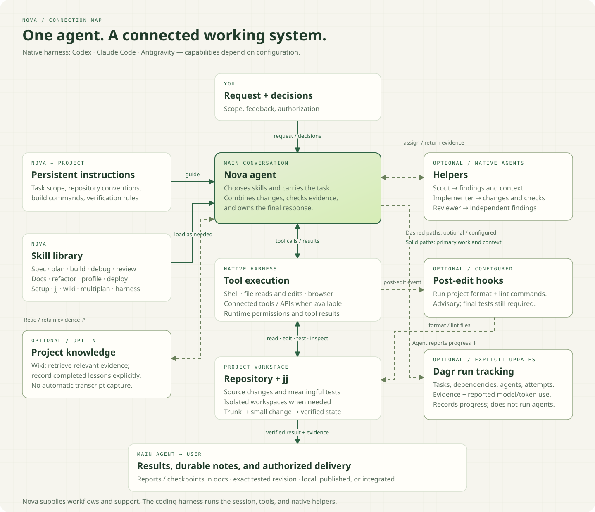

Deliverable and boundary
01 · System
How Nova works
Nova is a shared set of skills, project instructions, and optional helpers for Codex, Claude Code, and Antigravity. The coding harness runs the tools and agents; Nova defines how they approach the work.

The main agent reads the request and relevant project context, loads the skills it needs, and carries the task through implementation and verification. Decisions stay in the conversation. Independent tasks can go to helpers, with the main agent responsible for combining and checking their work.
- Persistent instructions
- Shared rules cover version control, verification, and task scope. Project instructions add build commands and architecture constraints.
- Skills
- Each skill contains the expertise and process for a kind of work. One shared skill library serves all three harnesses. Native plugins carry the skills, references, report templates, and scripts. Project setup adds persistent instructions and configured checks.
- Helpers
- A scout finds relevant code or documentation, an implementer completes an assigned task, and a reviewer checks proposed changes. Each returns evidence to the main agent. Claude and Agy helpers ship in the plugin; Codex helpers require explicit native setup.
- Hooks
- Optional post-edit hooks run configured formatting and lint checks. They supplement the task’s tests and review.
02 · Skills
Skills and their workflows
Select a skill to see its process and output. The categories group related work; a task uses only the skills it needs.
Decide
Change
Assure
Operations
Support
03 · jj & trunk
Local changes, shared trunk
Main is the shared trunk. Small changes start from it and return to it promptly. jj lets separate local workspaces share one repository, so helpers can hand back changes without pushing a branch for every task.
This shows the optional parallel path. For a single task, reuse one suitable workspace. Stack changes only when they depend on each other. A short-lived delivery bookmark fits trunk-based development; intermediate helper PRs are unnecessary. Direct-to-main delivery needs corresponding authorization.
The jj terms in the diagram
- Workspace
- A separate directory for working on files, sharing the repository’s history. Useful when tasks would otherwise interfere.
- Change ID
- The identity of evolving work. A helper returns it so the main agent can find and continue that change.
- Commit ID
- The exact version of a change. Record the tested commit so the evidence points to the source that actually passed.
- Bookmark
- A named pointer to a commit. When pushed to Git, it maps to a branch. Move it deliberately to the intended delivery revision.
What the agent does with jj
- Inspect the working copy, history, and actual trunk.
- Reuse a workspace, or create one from the chosen base when isolation helps.
- Edit files and describe the change. jj tracks the working copy as a commit; there is no separate Git staging step.
- Inspect returned changes, combine them, resolve conflicts, and run the required checks.
- Record the tested commit. Publish the intended bookmark only when authorized, then follow the repository’s integration checks.
Rebasing or resolving conflicts can change the tested source. Rerun affected checks before claiming it is ready.
Reference: jj commands and bookmarks and Git branches. The agent checks installed command help before choosing flags.
04 · Documents
What the work leaves behind
Documents live in the target repository’s docs/ directory. They capture requirements, the implementation approach, results, and enough context to resume unfinished work.
| Document | What it records | Default location |
|---|---|---|
| Specification | Expected behavior, confirmed decisions, examples, acceptance criteria, and open questions. | docs/specs/spec01-YYYYMMDD-title-slug.md |
| Plan | Technical approach, tasks, dependencies, acceptance tests, and their initial results. | docs/plans/plan01-YYYYMMDD-title-slug.md |
| Work report | Changes or findings, verification results, remaining gaps, and delivery status. One report can cover several skills. | docs/reports/build01-YYYYMMDD-title-slug.mdUse the relevant skill name, such as review or refactor. |
| Task checkpoint | Decisions, workspace and revision, completed work, checks, active helpers, and the next action. Used for substantial unfinished tasks. | docs/tasks/task01-YYYYMMDD-title-slug.md |
| Architecture decision record | Status, context, decision, and consequences when the work makes an architectural decision. | docs/adr/NNNN-title.md |
Formats and filenames
Reports use Markdown by default. An explicit request for a visual report adds HTML using the report layout and the same basename. Requested prototypes stay separate from product code.
Choose the lowest unused number for the document type, padded to at least two digits. Use its creation date and a short lowercase title slug. Revisions keep the same number and date; an explicit path or repository convention takes precedence.
Keep documentation current
Build and docs update affected README, API documentation, changelog, and architecture notes before final verification. Accepted architecture records stay intact; a changed decision gets a new record that supersedes the old one.
On resumption, the agent checks current files and active work against the checkpoint before reusing its evidence. An opted-in project wiki stores lasting lessons outside the repository, separately from task notes.